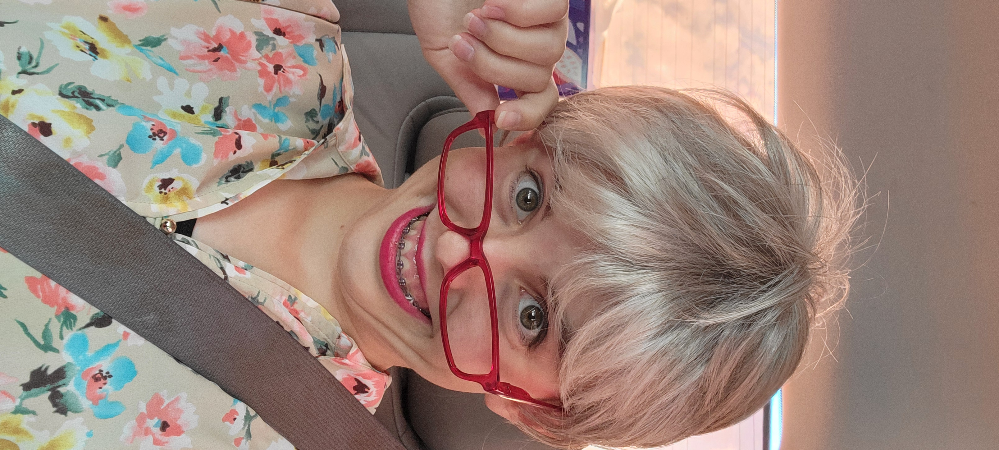

About Me

My name is Mercedes Valentine as you may have guessed! I am a member of the Church of Jesus Christ of Latter-day Saints. I love my Heavenly Father and my Savior Jesus Christ, and I am so grateful to have this Gospel in my life. If you are intrested in this church here is a link to their website: https://www.churchofjesuschrist.org/. I have many interests and one being art. I have a wonderful family of four. My Dad's name is Nathan, my Mom's name is Jessica, my brother's name is Memphis, and I have a wonderful dog named Jewel. We love spending time together and one of our favorite things to do is go to Disneyland. Because of our trips to Disneyland, and because of the different classes that I have taken in school, I have come up with the idea that I would love to become a Disneyland Imangineer when I grow up. Ever since I was a little girl, I have had a passion for creating art. When I was six years old, I began to explore the art of drawing realistic images. Due to my love for art I have decided to create a portfolio that showcases my work and inspires others to pursue their own talents.



About the Photos
One of my favorite things to do is make people smile and laugh. These photos capture my "cringe" personality and who I am as a person, sister, and daughter. I love my family so very much! I would not be the person I am today without them. They keep me on the right path, and always support and motivate me. They are my best freinds! I love to laugh at myself, and trigger others to laugh, too! Everytime I am funny, like in these photos, I will always laugh and remember to always be myself. Like my grandma always used to say, "I am the funniest person I know!" She was okay with laughing at herself when she embarassed herself.I want to follow her example and not care what other people think and just be the girl God created me to be.